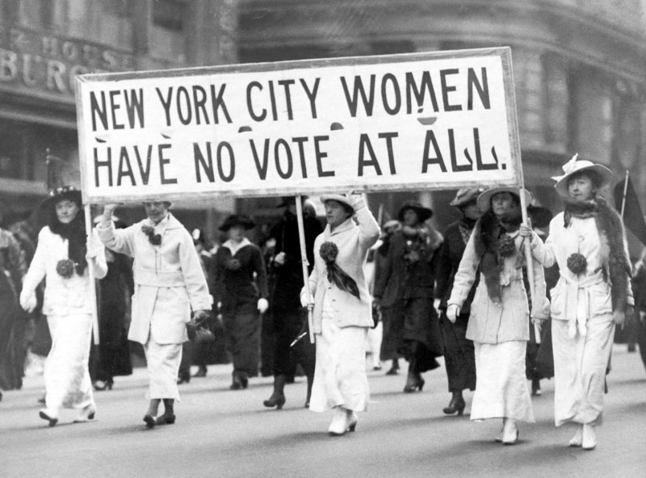
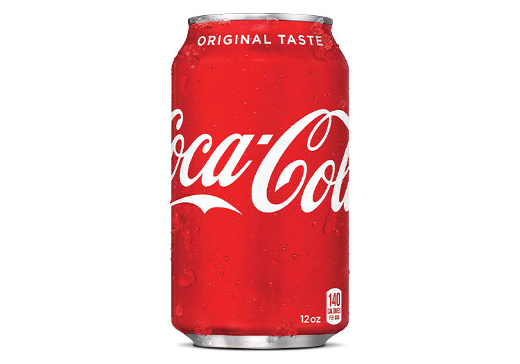
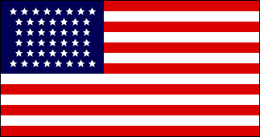
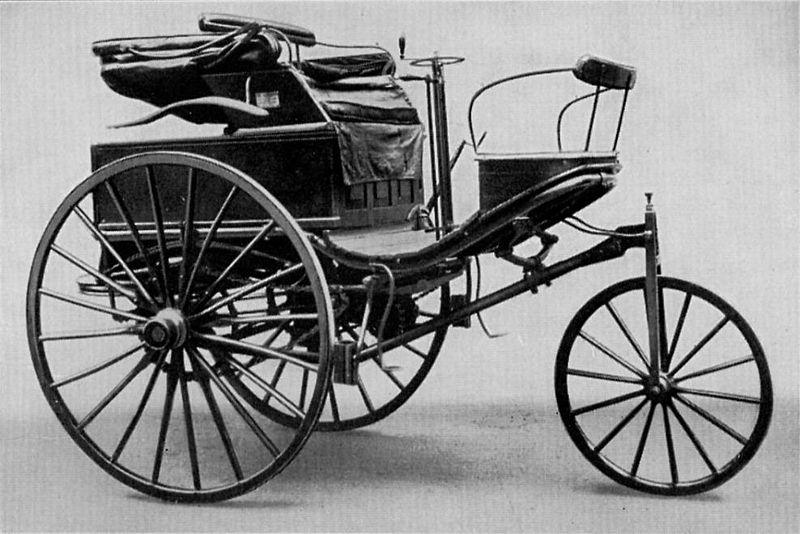
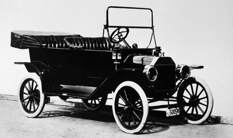

This page gives some context regarding the state of how the US and the world at the time The Yellow Wallpaper was written.
In 1892...
Women's suffrage was still 28 years away
Coca-Cola was founded
There were 44 states in the union. Wyoming was the latest, admitted in 1890.
The first automobile had been invented 10 years ago and the Model T was 16 years away.
 Basketball was invented in Springfield Massachusetts